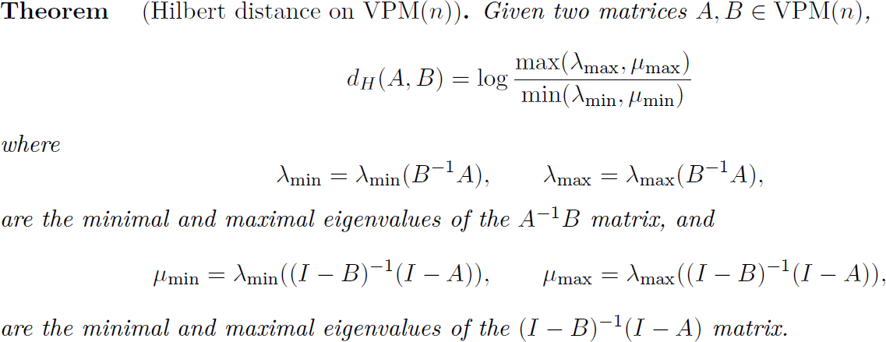

Geometry of the family of extended Gaussian distributions
by Jacek Karwowski and Frank Nielsen
Extended Gaussian distributions
A Gaussian distribution with potential rank-deficient degenerate covariance or precision matrix is called an extended Gaussian distribution.
When the covariance matrix is rank-deficient, we may handle the extended Gaussian distribution as a lower-dimensional non-degenerate Gaussian distribution.
When the precision matrix is degenerate, the degenerate precision matrix Gaussian models an affine subspace.
When this affine subspace is of dimension 0, we get a Dirac distribution.
Degenerate precision Gaussians were first studied by James [James, 1973] are used to model non-determinism in Willems's framework
of open stochastic systems [Willems, 2012].
We consider below zero-centered extended Gaussian distributions.
Parameter space
The parameter space of (zero-centered) extended Gaussian distributions form a bicone:
For 2x2 matrices, we can visualize the bicone in R3:
animation video: rotating the bicone.
A conceptual view of the generic bicone is
Hilbert geometry
Because the bicone is bounded convex object, we may consider its underlying Hilbert geometry.
We get the following Hilbert distance:

Invariances of the Hilbert bicone distance
- Isometry under identity complement:
- Isometry under orthonormal conjugation:
Nested Hilbert geometry
Hilbert distance is defined on a bounded open convex domain.
We can enlarge the bicone by scaling by a factor 1+eps so that it contains the bicone parameter space, and thus defines a proper (finite)
distance between degenerate Gaussians.
Abstract
The extended Gaussian family is the closure of the Gaussian family obtained by completing the Gaussian family with the counterpart elements induced by degenerate covariance or
degenerate precision matrices, or a mix of both degeneracies. The parameter space of the extended Gaussian family forms a symmetric positive semi-definite matrix bicone, i.e. two partial
symmetric positive semi-definite matrix cones joined at their bases. In this paper, we study the
Hilbert geometry of such an open bounded convex symmetric positive-definite bicone. We report
the closed-form formula for the corresponding Hilbert metric distance and study exhaustively
its invariance properties. We also touch upon potential applications of this geometry for dealing
with extended Gaussian distributions.
Keywords
extended Gaussian distributions, symmetric positive semi-definite cone bicone, Hilbert geometry, projective geometry, invariance, open stochastic systems
References
- Alan Treleven James. The variance information manifold and the functions on it. In Multivariate
Analysis–III, pages 157–169. Elsevier, 1973
- Jan C Willems. Open stochastic systems. IEEE Transactions on Automatic Control, 58(2):406–
421, 2012.
- Dario Stein and Richard Samuelson. A Category for Unifying Gaussian Probability and Nondeterminism.
In 10th Conference on Algebra and Coalgebra in Computer Science (CALCO
2023), pages 13–1. Schloss Dagstuhl–Leibniz-Zentrum für Informatik, 2023.
- Jacek Karwowski and Frank Nielsen.
Hilbert geometry of the symmetric positive-definite bicone:
Application to the geometry of the extended Gaussian family,
arXiv preprint arXiv:2508.14369 (2025). Accepted to Neurreps, 2025.
Open review